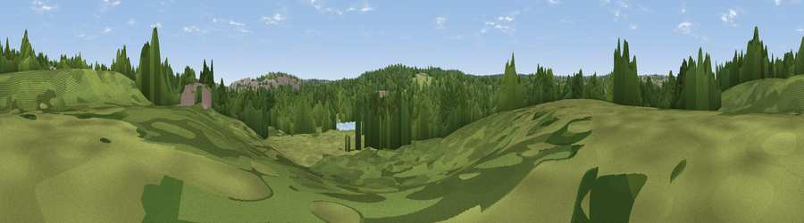

Viewpoint near West Bromwich
#45850 in England · top 96% of its area beats it · near West Bromwich · access?Where it is
The exact computed spot (SP 03367 92756). Click the marker for map links.
Public access: no public right of way or access land is recorded at this exact spot — it may be on private land. Computed from Natural England's CRoW access layer and OpenStreetMap rights of way — not the legal definitive map. Always verify locally.
The view, rendered

A 360° render of this exact spot computed from the terrain model, tree cover and land cover — summer colours, afternoon light, calibrated against photographs of famous viewpoints. Real trees, hedges and buildings will differ in detail.
The panorama
Grey silhouette: terrain skyline in each direction (720 bearings, Earth curvature and refraction included). Dashed green: skyline with trees (+15 m) and buildings (+8 m) as obstacles. Blue strip: how far the ground is visible on each bearing.
Where the view opens
Wedge length = distance to the farthest visible ground on that bearing (vegetation-aware). Rings at 10, 25 and 50 km.
What fills the view
47% woodland · 36% grassland · 9% built-up · 7% water ·
Angular shares of the visible panorama (visual magnitude), not map area. Landscape diversity 0.52 (0–1 Shannon).
Key numbers
More beautiful places nearby
The staircase of upgrades: each row has a higher view potential than everything closer. Driving times are estimates from straight-line distance, calibrated against real road routing — check an actual route before setting out.
| Place | Direction | Drive | Score |
|---|---|---|---|
| Viewpoint near Great Barr | NNE · 3 km | ~7 min | 24.2 |
| Viewpoint near Great Barr | NNE · 5 km | ~10 min | 34.7 |
| Viewpoint near Great Barr | NNE · 5 km | ~11 min | 50.0 |
| Viewpoint near Streetly | NNE · 6 km | ~12 min | 69.5 |
| Viewpoint near Clent | SW · 16 km | ~28 min | 73.8 |
| Viewpoint near Clent | SW · 16 km | ~28 min | 74.3 |
| Knowle Hill | WSW · 36 km | ~54 min | 75.5 |
| Viewpoint near Abberley | SW · 37 km | ~56 min | 77.5 |
52.53266, -1.95180 · source: osm viewpoint · position refined by local search. Computed location — check access rights before visiting.